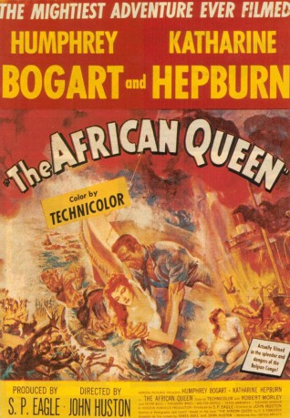
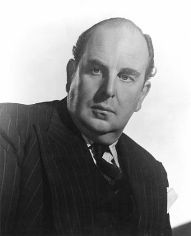

#1884 African Queen
Alternativ: The African Queen
Auszeichnungen: 1 Oscars gewonnen für 3 Oscars nominiert
 
 IMDB-Wertung: 7.9 / 10
IMDB-Wertung: 7.9 / 10  Metascore: 91
Metascore: 91 
Erster Weltkrieg, mitten im Nirgendwo in Afrika. Die Missionarin Rose Sayer überzeugt den Kapitän der African Queen, sich einen Weg den Fluss hinunter zu schlagen, um den mit selbstgebauten Torpedos das Panzerschiff der Deutschen zu kapern.
Jahr: 1951
Dauer: 105 Minuten
FSK: 12
Land: USA Studio: United ArtistsTonspuren:
Untertitel:
Auflösung: 1080p (1488x1080) Größe: 7997 MB
Genre: Drama, Abenteuer, Krieg, Liebe
Regisseur:  John Huston
John Huston
Drehbuch: C.S. Forester, James Agee, John Huston, John Collier, Peter Viertel
Soundtrack: Allan Gray
Darsteller:
 Humphrey Bogart als Charlie Allnut
Humphrey Bogart als Charlie Allnut Katharine Hepburn als Rose Sayer
Katharine Hepburn als Rose Sayer-  Robert Morley als Rev. Samuel Sayer
- Peter Bull als Captain of Louisa
- Theodore Bikel als First Officer
 Walter Gotell als Second Officer
Walter Gotell als Second Officer Richard Marner als Second Officer of Shona
Richard Marner als Second Officer of Shona- Peter Swanwick als First Officer of Shona
- Errol John als Native soldier , uncredited
- Gerald Onn als Petty Officer , uncredited
- John von Kotze als German Officer , uncredited
Datei: X:\1950-1959\African Queen (1951, FSK12, 1488x1080).mkv seit 31.08.2015
Festplatte: HD 1900-1970
 Es gibt insgesamt 141 Filme in der Gruppe '1950-1959'
Es gibt insgesamt 141 Filme in der Gruppe '1950-1959'